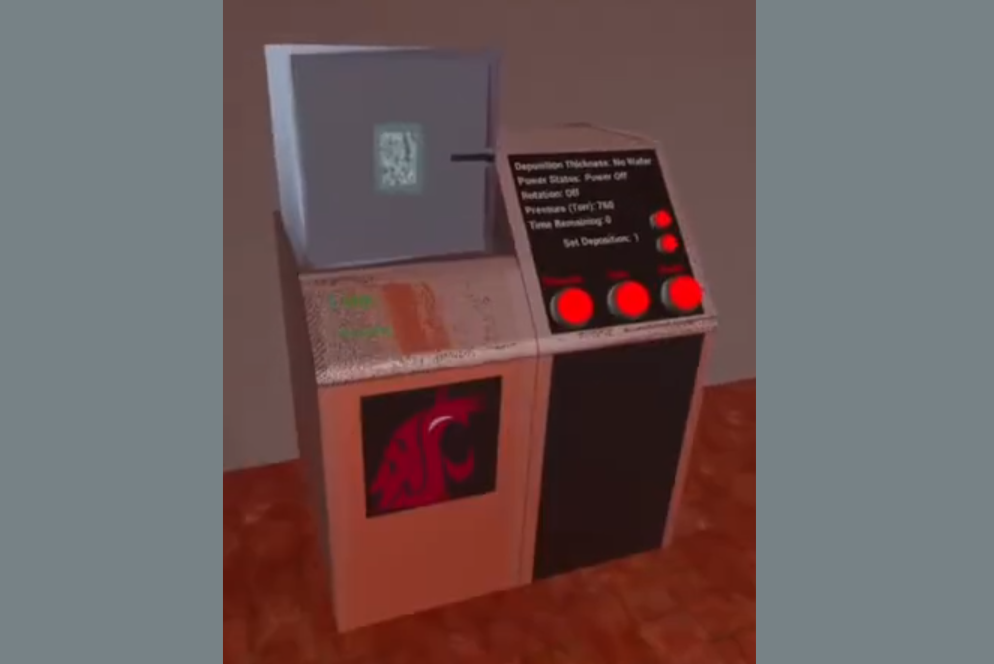
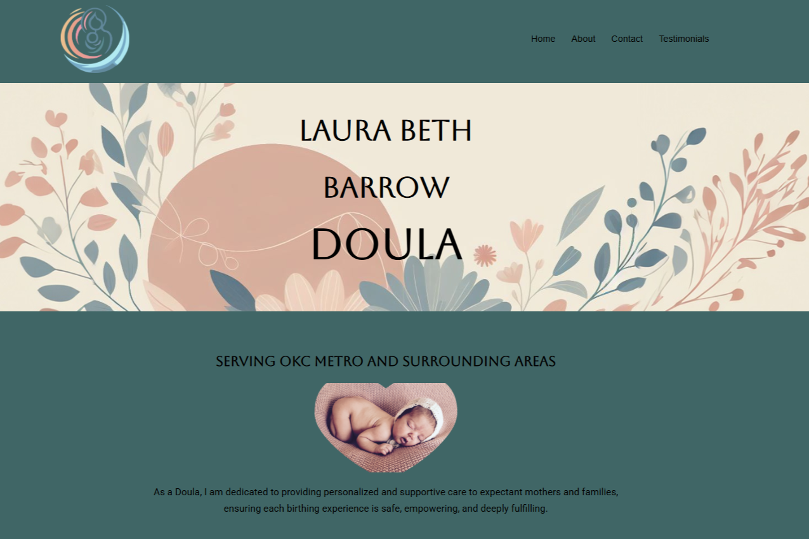
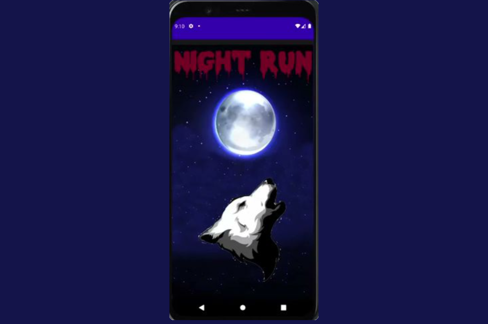

Code Portfolio
Cleanroom VR Project

Co-developed a high-fidelity, virtual reality clean room simulation for the Oculus Quest 2 to train engineering students in the precise procedures of silicon wafer production. To build a realistic immersive environment, I constructed the core 3D geometry using Blender and imported the assets into Unreal Engine, where I configured and optimized premade texture packets to replicate realistic industrial surfaces. A key focus of my work included designing custom materials, such as a transparent and reflective glass texture for the clean room apparatus. Working within an Agile team structure, we successfully delivered an interactive, material-free training exercise designed to teach manufacturing workflows safely and efficiently.
LBDoula website

Designed and deployed a multi-page WordPress website customized to support a small business's digital presence and customer reach. Beyond configuring the site architecture and ensuring clean content layouts, I took a creative approach to the company's branding by leveraging AI image generation tools to conceptually design and refine their official business logo. This project showcased my ability to balance rapid open-source CMS development with modern, AI-assisted asset creation to deliver a cohesive, end-to-end brand presentation.
Night Run mobile game

Engineered Night Run, a native 2D action-arcade mobile game built within Android Studio using Java. Developed a real-time game loop from scratch, programming the logic to handle vertical character navigation via mouse clicks, manage the horizontal generation of oncoming objects, and calculate collision detection for dodging or collecting items. Designed the application layout, interactive menus, and user interfaces using structural XML components to ensure a clean, cohesive visual experience in the emulated testing environment.
Forbis Auto Detail website

Built a fully responsive, multi-page web application using standard HTML5, CSS3, and native JavaScript to create an engaging frontend user experience. To handle dynamic user interactions without the overhead of a traditional server, I engineered a serverless contact architecture by integrating the FormSubmit API, streamlining client quote requests and message routing seamlessly. I owned the entire engineering lifecycle for this project, moving from initial requirements gathering to layout design, interactive feature implementation, and final deployment and hosting.